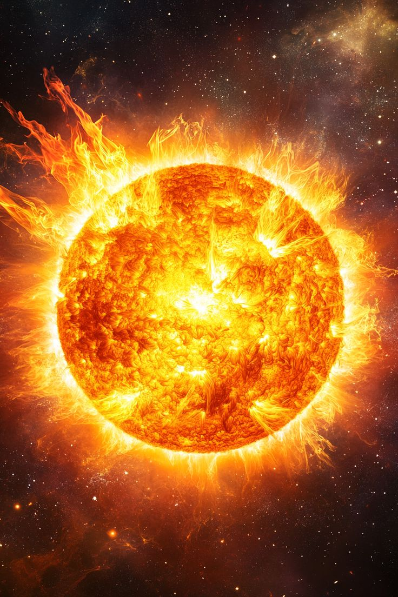
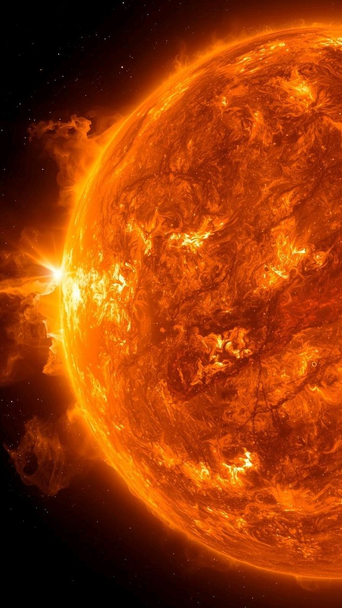
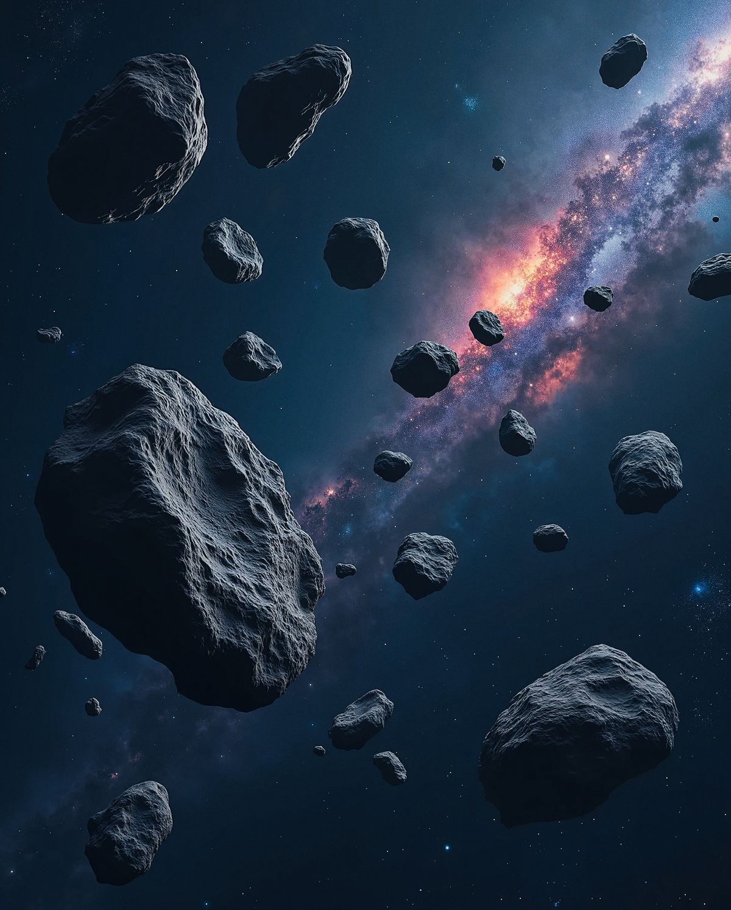
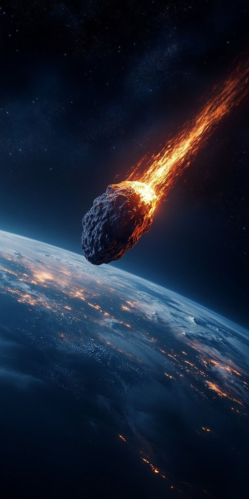
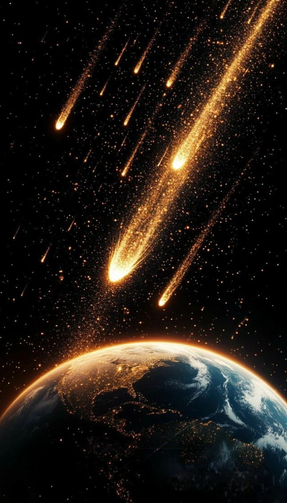
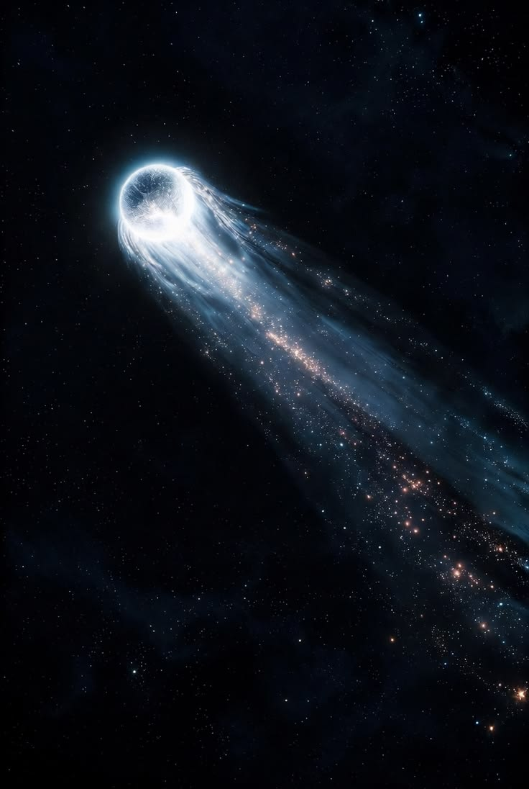
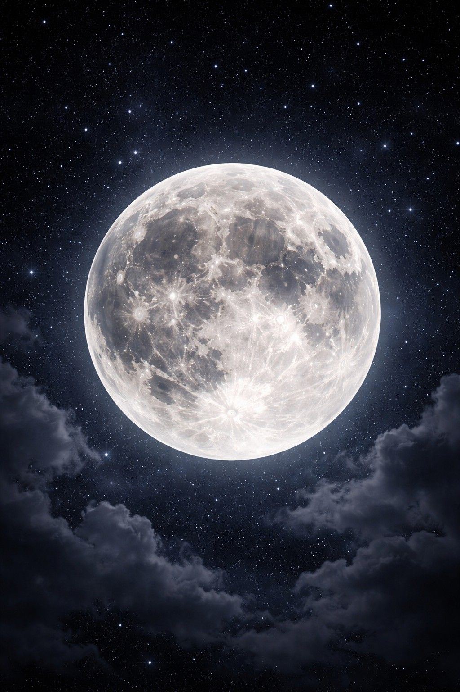
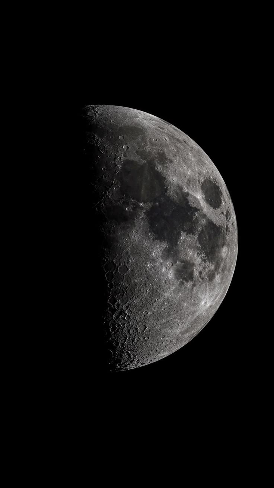

O Sol, nossa fonte de luz e de vida, é a estrela mais próxima de nós e a que melhor conhecemos. Basicamente, é uma enorme esfera de gás incandescente, em cujo núcleo acontece a geração de energia através de reações termonucleares. O estudo do Sol serve de base para o conhecimento das outras estrelas, que de tão distantes aparecem para nós como meros pontos de luz.
Apesar de parecer tão grande e brilhante (seu brilho aparente é 200 bilhões de vezes maior do que o de Sírius, a estrela mais brilhante do céu noturno), na verdade o Sol é uma estrela bastante comum.
Algumas das características listadas acima são obtidas mais ou menos diretamente. Por exemplo, a distância do Sol, chamada Unidade Astronômica, é medida por ondas de radar direcionadas a um planeta em uma posição favorável de sua órbita (por exemplo Vênus, quando Terra e Vênus estão do mesmo lado do Sol e alinhados com ele). O tamanho do Sol é obtido a partir de seu tamanho angular e da sua distância. A massa do Sol pode ser medida a partir do movimento orbital da Terra (ou de qualquer outro planeta) usando a terceira lei de Kepler. Sabendo então sua massa e seu raio temos a densidade média do Sol.
Outras características são determinadas a partir de modelos. Por exemplo, a equação de equilíbrio hidrostático, permite determinar a pressão e a temperatura no centro do Sol, supondo que elas têm que ser extremamente altas para suportar o peso das camadas mais externas.
A primeira determinação quantitativa da composição química da atmosfera solar foi obtida em 1929 por Henry Norris Russel (1877-1957), publicada no Astrophysical Journal, 70, 11, baseada em estimativas a olho das intensidades das linhas no espectro solar.


Sol
O Sol é o centro gravitacional que mantém todos os objetos em órbita; sem ele, o Sistema Solar vagaria no escuro.
Asteroides são objetos rochosos e metálicos que orbitam o Sol, mas muito pequenos para serem considerados planetas. Eles são conhecidos como planetas secundários. Asteroides variam em tamanho: de Ceres, que tem um diâmetro de cerca de 1000 km, até o tamanho de pedregulhos. Dezesseis asteroides têm um diâmetro de 240 km ou maior. Eles foram achados desde dentro da órbita da Terra até além da órbita de Saturno. Porém, a maioria está contida dentro de um cinto principal que existe entre as órbitas de Marte e Júpiter. Alguns têm órbitas que atravessam o caminho de Terra, e alguns chegaram até mesmo a atingir a Terra em tempos passados. Um dos exemplos dos mais bem preservados é a Cratera de Meteoro Barringer, perto de Winslow, Arizona.
Asteroides são materiais remanescentes da formação do sistema solar. Uma teoria sugere que eles sejam os restos de um planeta que foi destruído há muito tempo em uma brutal colisão. Mais provável, asteroides são materiais que nunca fundiram-se em um planeta. De fato, se a massa total calculada de todos os asteroides fosse juntada em um único objeto, o objeto teria menos de 1.500 quilômetros (932 milhas) de diâmetro -- menos que a metade do diâmetro de nossa Lua.
Muito de nossa compreensão sobre asteroides vem de pedaços examinados de detritos espaciais que caem na superfície da Terra. Asteroides que estão em um curso de colisão com a Terra são chamados meteoroides. Quando um meteoroide golpeia nossa atmosfera a alta velocidade, a fricção faz com que este grosso pedaço de matéria espacial queime em um risco de luz conhecido como meteoro. Se o meteoroide não queima completamente, o que sobra atinge a superfície de Terra e é chamado de meteorito.


Asteroides
Como os asteroides se formaram próximo aos primeiros momentos de existência do Sistema Solar, esses objetos são de grande interesse para os cientistas, funcionando como cápsulas do tempo cósmicas.
Cometa é o menor corpo contido no sistema solar, possui semelhança com um asteroide e é constituído, majoritariamente, por gelo. No passado, os cometas produziam nas pessoas medos e superstições e na contemporaneidade causa uma enorme curiosidade.
Eles podem ser periódicos (como é o caso do cometa Halley, que passa pelo sistema solar em intervalos de cerca de 76 anos) e não periódicos, que são aqueles que entram e saem rapidamente no sistema solar em direção ao espaço interestelar. Um cometa possui uma estrutura física dividida em três partes: núcleo, cabeleira ou coma e cauda.


Cometas
Cometas são viajantes cósmicos, trazendo poeira, gelo e mistério do Sistema Solar primitivo.
A Lua é o único satélite natural da Terra nota 1 e o quinto maior do Sistema Solar. É o maior satélite natural de um planeta no sistema solar em relação ao tamanho do seu corpo primário, nota 2 tendo 27% do diâmetro e 60% da densidade da Terra, o que representa 1⁄81 da sua massa.
Entre os satélites cuja densidade é conhecida, a Lua é o segundo mais denso. Estima-se que a formação da Lua tenha ocorrido há cerca de 4,5 mil milhões de anos, relativamente pouco tempo após a formação da Terra. Embora no passado tenham sido propostas várias hipóteses para a sua origem, a explicação mais consensual atualmente é a de que a Lua tenha sido formada a partir dos detritos de um impacto de proporções gigantescas entre a Terra e um outro corpo do tamanho de Marte.
A Lua encontra-se em rotação sincronizada com a Terra, mostrando sempre a mesma face visível, marcada por mares vulcânicos escuros entre montanhas cristalinas e proeminentes crateras de impacto. É o mais brilhante objeto no céu a seguir ao Sol, embora a sua superfície seja na realidade escura, com uma refletância pouco acima da do asfalto. A sua proeminência no céu e o seu ciclo regular de fases tornaram a Lua, desde a antiguidade, uma importante referência cultural na língua, em calendários, na arte e na mitologia. A influência da gravidade da Lua está na origem das marés oceânicas e ao aumento do dia sideral da Terra. A sua atual distância orbital, cerca de trinta vezes o diâmetro da Terra, faz com que no céu o satélite pareça ter o mesmo tamanho do Sol, permitindo-lhe cobri-lo por completo durante um eclipse solar total.


Lua
A Lua é o único satélite natural da Terra, situada a cerca de \(384.400 \text{ km}\) do planeta, e a cada ano se afasta \(3,78 \text{ centímetros}\)..